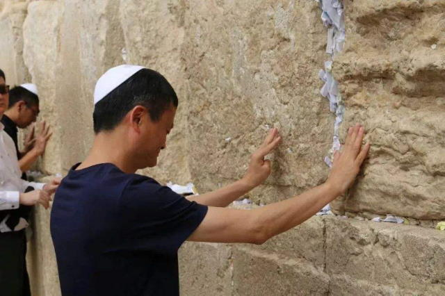
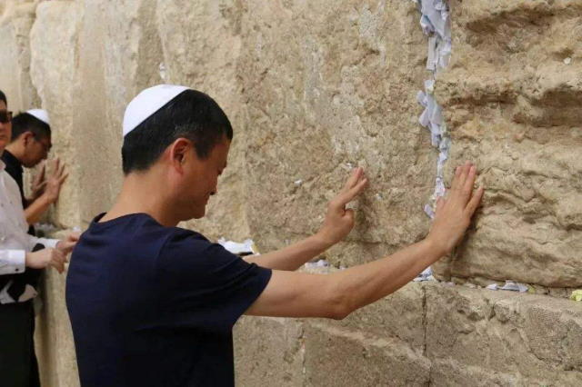

“人类全然堕落败坏，无以复加……”伊玛目表情呆滞，口中念念有词，“没什么自由意志，中央已经钦定了……”
“拉比……”清真寺学习行走轻声提醒，没想到方丈看了论文之后有这么大反应。
“说过你多少遍了，上班的时候叫我阿呆！”伊玛目忽然清醒过来，然后把手中期刊向前翻了几页，找到论文标题下面的署名，咬牙切齿，“好！很有精神！你的名字？魏尔斯特拉斯！我记住了！”
“阿呆……”清真寺学习行走提醒，“时间快到了，外面的奴才都等着您领衔磕头呢”。
“是阿……阿訇！”伊玛目纠正，清晰响亮的发出鼻音，不小心带出两坨鼻涕来，赶紧抓起手帕擦拭标志性的鹰钩鼻子①，“我知道了，你先把罗盘端出去”。
清真寺学习行走应声称是，抱着香炉迈着正步走了。
“处处连续处处不可导……”，伊玛目站起来走了几步，忽然眼前一亮，“对呀，素质低下，性格卑劣，没有任何闪光点……反而印证了教义嘛”。
“哎！”伊玛目三步并作一步走冲向书桌的时候，步子太大扯到蛋了，赶紧伸手揉揉裤裆，缓解尊贵的鸡巴之肿痛感，背诵祖训，“哈希姆之苗裔兮，朕皇考曰阿里”。
“阿訇……”清真寺学习行走掀开挂毯探头提醒。
“这就去”，伊玛目抓起笔潦草的记录刚才的神学灵感，然后整理仪容准备出门登坛作法，嘴里不停嘟囔，“市面上这帮马瓦力，甚至还有起哄架秧子的卡菲勒，满口‘马爸爸马爸爸’的吆喝②，真特么以为自己跟世宗哀皇帝是平辈吖”。
“麦加在哪里呀麦加在哪里？麦加就在色目人的心坎里！”清真寺学习行走，或者说实习助祭，一边哼着小曲一边调整罗盘，香炉上面悬浮的模糊影像，指明了此时此刻的正确方位，“最近的随机游走越来越奇葩了……”
“阿拉胡……阿克巴！”免冠徒跣的伊玛目高呼革命口号，以头抢地。
“阿拉胡……阿克巴！”伊玛目屁股后面大批奴才齐声跟诵，纳头便拜。
“阿胡拉……马自达……”伊玛目紧贴着地毯的嘴唇，配合群众大合唱的节奏，无声的念诵这个名字。
“我休了你，我休了你，我休了你”，清真寺学习行走蹲在猫砂盆上，伸手抓起一把沙子擦拭闪耀着金属光泽的吱～，嘴里念念有词，“重要的事情说三遍”。
床上的女人没有任何反应。
“我宣布，婚姻关系正式结束”，伊玛目严肃的说，“以后也不可复合了”。
“反正也玩腻歪了”，清真寺学习行走毫不在乎，裹好兜裆布，看着床上的女人，“抱歉，有錢是真的能為所欲為的我们无法一起学习③”。
“你的进步速度超乎想象”，伊玛目赞许的说，“接下来就是最后的毕业设计和答辩了”。
“终于能当上清真寺行走了”，清真寺学习行走跃跃欲试，“您说吧，我这就去准备开题报告”。
“别高兴得太早”，伊玛目泼冷水，“红白喜事可不是那么简单，即便把《古兰经》《圣训》背得滚瓜烂熟也没用”。
“还能有什么花活？”清真寺学习行走不以为然，“就是唢呐十级我也考过了”。
“此去泉台招旧部，旌旗十万斩阎罗”，伊玛目念了两句诗，“你需要独立主持一场冥婚”。
“冥婚？”清真寺学习行走第一次听说这个概念，“打穿哲罕南七重门还能带着营妓？”
“所以说你高兴得太早了”，伊玛目慈祥的说，“读完本科就以为自己无所不知了，别忘了上面还有略有所知的硕士和一无所知的博士”。
“您说吧”，清真寺学习行走自信心爆棚，“一定多快好省坚决完成任务”。
“先把‘湿货’准备好”，伊玛目伸手一指床上的女人，“宰了！”
“投名状不是已经交过了么？”清真寺学习行走有些犹豫，“一日夫妻百日恩，虽然离婚了吧，但是……”
“一块抹布一张卫生纸都有它的价值，倒腾啥都不如倒腾女人挣钱，活的死的都挣，还没成本”，伊玛目抽出大马士革弯刀递给清真寺学习行走，“等啥呢？麻利儿的！属算盘子的是不是？非得拨一拨才肯动一动？男方家属已经不耐烦了”。
“要不……您先示范一遍”，清真寺学习行走忽然变身缩卵怂货窝囊废，“我来念苔丝米耶”。
“嗤，翅膀硬了吖？”伊玛目忽然把脸一板，“敢跟师傅顶嘴了？”
“师父，徒儿知错了”，清真寺学习行走抱着脑袋满地打滚，漆黑的大胡子乱作一团，“我还是个孩子吖……④”
“知道就好”，伊玛目停止念诵紧箍咒，看着清真寺学习行走坐起来喘气，再一次把刀递过来，“以普慈特慈的真主之尊命……”
“阿拉胡阿克巴！”清真寺学习行走咬紧牙关，手起刀落，划过女人咽喉。
“赶紧收拾一下”，伊玛目指示，“该上路了”。
清真寺学习行走脸色晦暗，默默的把尸体用白布裹好捆结实，扛在肩上，随着伊玛目走出后门，放在门口骆驼背上。
到了地头，伊玛目说什么，清真寺学习行走就做什么，看着各种奇怪的纹章法器也按捺住好奇心，一言不发。
“都夸你说的比唱的还好听”，伊玛目讽刺，“现在该你唱了”。
“送战友，踏征程”，清真寺学习行走纵声高歌，声音有些颤抖，“默默无语两眼泪，耳边响起驼～～～铃～～～声……”
“搞定收工”，伊玛目一锤定音，现场的气氛一下子从庄严肃穆变成欢乐喜庆，除了清真寺学习行走。
“花椒呢？”一帮人把骆驼放倒剥皮切肉，燃起熊熊的篝火，准备野炊。
“孜然也凑活了，刀子和盐倒是猜对了”，有人搭茬，“那马瓦力还敢顶嘴‘只有一个骆驼，死了也不去，要罚就罚’⑤，那就罚他死了呗，咱家少爷又多了个奴才”。
“您不吃？”清真寺学习行走心里难受没胃口吃，看伊玛目明明心情舒畅却也在冷眼旁观，忍不住问了一句。
“不吃”，伊玛目回答，然后补充，“以后你也不能吃了”。
清真寺学习行走知趣的没有追问为什么，跟着伊玛目走回来，领了清真寺行走上岗证之后，下班回家去了。
伊玛目走进书房，盘腿坐在座钟旁边，掀动机关。
“那孩子表现怎么样？”座钟里发出低微但是清晰的声音。
“还行，很快就调整过来了”，伊玛目回答，“比预想的过程要顺畅”。
“那是”，声音有些得意，“谢里夫的家学渊源”。
“赛义德也不差嘛”，伊玛目想起自己当年的表现，确实相比后浪有些逊色。
“既然他能上岗，最近先让他顶班”，座钟发表指示，“需要你去调查一件事”。
“什么事？”伊玛目有些心不在焉，语气敷衍。
“利雅得的那个蛙蛤怖，最近又不消停了”，座钟说，“自称是鸦鸽怖私生子的后裔”。
“那又怎样？”伊玛目反问，“难道诺亚方舟又加印了一万两千张站票？”
“就是因为不知道才需要调查”，座钟说，“这事那孩子还干不了”。
“本来就应该轮到谢里夫了”，伊玛目明显在推诿工作，“也是你们离得近”。
“你是不是对组织安排的工作有些意见？”座钟调门高起来了。
“算是临盆综合症嘛”，伊玛目口气软化，开始自嘲，“去年百鬼夜行就没赶上”。
“你不觉得专挑这个时候搞事，不是偶然是必然么？”座钟提醒。
“连‘十九年七闰’都不知道的傻哔绿人，连‘十二时辰’都不会数”，伊玛目嘲讽，“还能凑准日子肯定是有高人指点”。
“想知道的就是这个高人是谁”，座钟语气严厉，“等啥呢？麻利儿的！属算盘子的是不是？非得拨一拨才肯动一动？组织已经不耐烦了”。
“要不……您先示范一遍”，伊玛目忽然变身缩卵怂货窝囊废，“我来学习观摩”。
“嗤，翅膀硬了吖？”座钟语气强硬，“敢跟师傅顶嘴了？”
“师父，徒儿知错了”，伊玛目抱着脑袋满地打滚，花白的大胡子乱作一团，“我还是个孩子吖……④”
“太阳出来啰喂喜洋洋啰，挑起扁担进市场咯”，清真寺行走高亢的嗓音响彻云霄，新的穆安津还没到，自己还得继续兼任，“只要我们多勤快，不愁吃来不愁穿咯”。
一曲《晨礼》唱罢，清真寺行走意犹未尽。伊玛目最近出差，头上没有领导管着，果然心情舒畅。走下宣礼塔，看见满面倦容的巡逻保安刚下夜班准备回来睡觉，都不忘凑过去乐呵呵的嘘寒问暖，“早安，打更人”。
“无聊啊⑥”，清真寺行走嘟囔，在屋里坐立不安，平时都被伊玛目指使干这干那，忙活得团团转脚打后脑勺，现在自己当家作主，忽然不知道该干嘛了，“闲得慌”。
“嘿嘿嘿”，清真寺行走抓起烟袋锅，塞进古巴烟丝，点燃之后，狠狠抽了一口，“绿皮书上没来及写禁烟，真是万幸”。
抽完一锅烟，清真寺行走百无聊赖的打了几个滚，离开靠枕，趴在地毯上，蠕动几下对准地毯中央图案，想起伊玛目第一次带着自己上天的场景。
“就你行？你咋不上天呢？”当时写作业一塌糊涂，被伊玛目批评的时候还顶嘴，然后就抱着脑袋满地打滚了，下巴上的山羊胡还蹭掉了一撮。
“怎么起飞了？”宣礼塔质问。
“起飞时间到”，伊玛目回答。
“我们首长的表还没到呢”，宣礼塔打官腔，“忘了礼数没来觐见对表是么？”
后来嘛，“官大表准”的政治规矩和组织纪律，就有了一些通权达变。
对了，新来的穆安津等着面试呢。清真寺行走想起这事，爬起来掀开挂毯走了出去。
“我爱安卡拉，我爱巴格达”，来人身材高大，嗓音一点也不逊色，“帝国就是我的家，苏丹就是我的爸”。
“别唱了”，清真寺行走喊停，“不合格”。
“为啥？”一脸委屈。
“我怀疑你有移民倾向”，清真寺行走一本正经的回答，“哪儿来的野种？还想拿身份证？”
“我可是整整努力了十年啊”，委屈极了，“该考的证都考了，该办的手续都办了”。
“你的努力，在别人的天赋面前不值一提”，清真寺行走嗤之以鼻，“滚回肯尼亚去，两河不是你的家”。
“阿拉伯人的天赋？”明知无望，语气就激烈起来了，“简直就是个笑话”。
“奋六世之余烈，凭什么输给你十年寒窗苦读？”清真寺行走根本不搭话，伸手一指门外，“黑鬼！滚！”
应聘者气哼哼的走了。
“居然敢叫侯赛因⑥”，清真寺行走顺手把简历揉成一团，“肯定是哪个赛义德上火的时候一泡尿滋出来的贱货”。
“其实应该让他实习几天的”，清真寺行走想起今天白天还有三段唱词，实在懒得动弹。刚想起来伊玛目以前都是让应聘者回去等通知，过几天再招过来面试，能骗一回是一回，“谁让咱看见怂人压不住火呢？”
“又不能下班”，清真寺行走伸个懒腰，回屋打盹，当一天神棍唱一天钟，“不管了，睡”。
“月亮出来啰喂，喵喵躺在蛤哔哔的怀里数星星”，清真寺行走高亢的嗓音响彻云霄，半夜鸣叫提醒马瓦力继续披星戴月不懈奋斗，“天上的星月多么美丽，明天的早餐在哪里？”
一曲《斋月宵礼》唱罢，清真寺行走意犹未尽。最近鸿绿运当头，升官发财死老婆，果然心情舒畅。想起组织新分配的学伴，又是个和卓，正在卧室等着自己，不禁兜裆布鼓起，把袍子都顶起一块，顺便陶醉于自己的进步速度，“只要掌握了技巧，水银吱～就是好使”。
走下宣礼塔，迎面碰上更夫正在敲锣打梆子，声音沙哑，“子时九点整，平安无事喽”。
“累吗？累就对了”，拥有绝对音感的清真寺行走敏锐的听见更夫肚子咕咕叫，就慈祥的过去搭话，“舒服是留给色目人的”。
“谁呀？”醉眼惺忪的清真寺行走看着面前模模糊糊的人影⑦，“你的名字？妞！你的星座？”
“孽畜！”伊玛目破口大骂，“你脑壳里进水了吧？”⑧
“您……回来了！”清真寺行走听到熟悉的声音，立刻条件反射般抱着脑袋，准备满地打滚，定睛一看，伊玛目脸上青一块紫一块，忍不住开口询问，“您……怎么了？”
“嗨，年轻人不讲武德，偷袭我这个六十九岁的老人家”，伊玛目尴尬的扯淡⑨，“讨论教义讲究的是‘点到为止’嘛，何必动手呢？劝它们耗子尾汁”。
“我问你”，年轻人一拳砸在伊玛目脸上，“阿拉祂老人家到底是男人还是女人？”
“阿拉祂老人家既不是男人也不是女人”，伊玛目脑壳里却便似开了个油酱铺，咸的、酸的、辣的一发都滚出来，“确切的说……”
“错了，阿拉祂老人家既是男人也是女人”，又是一拳，“我再问你，阿拉祂老人家到底是白人还是黑人？”
“阿拉祂老人家既不是白人也不是黑人”，伊玛目脑壳里也似开了个彩帛铺，红的、黑的、紫的都绽将出来，“确切的说……”
“错了，阿拉祂老人家既是白人也是黑人”，又是一拳，“你明白了么？”
“我明白了”，伊玛目脑壳里却似做了一个全堂水陆的道场，磬儿、钹儿、铙儿一齐响，“阿拉祂老人家原来是米哈伊尔·本·鸦鸽怖”。
“哎呀，好汉不吃眼前亏，您说最狠的话，肯定挨最毒的打⑩”，清真寺行走心里暗爽，但是表面上还得大着舌头假惺惺的赔笑脸说风凉话，“它们的教义怎么就那么奇怪呢？”
“奇怪也就罢了，都是穆斯林，求同存异嘛”，伊玛目气哼哼的，“非得把持不同学术观点者打成叛徒、内奸、绿贼，至于么？”
“您是怎么，呃，跟它们吵起来的？”，清真寺行走打了几个酒嗝，无意识的掏出烟袋锅，“这椰枣汁真上头”。
“闲得慌哼了首小曲，就有一帮人过来了”，伊玛目看见清真寺行走手里的烟袋锅，伸手一指，“我就这么敬烟套近乎，被一巴掌搧到地上”。
“您先用着”，清真寺行走依依不舍的把烟袋锅递给伊玛目，赔笑脸没话找话，“您哼的是什么曲子？”
“什么曲子都一样”，伊玛目伸手抓过烟袋锅，塞好烟丝点燃，抽了一口，“那帮穷哔就见不得别人开心，一定要想方设法给祸祸了。啥？教义里没有？来人呀，给他写一条！”
“这个立法程序……比较简洁高效”，清真寺行走不知道该说啥好，“刑不可知，则威不可测嘛”。
“问题在于，只许穆夫提放火，不许伊玛目点灯”，伊玛目吐个烟圈，“那帮穷哔扬长而去的时候，高声大嗓五音不全，还唱歌呢”。
“唱的是啥？”清真寺行走嘴里淡出鸟来，坐立不安，从怀里抓出几片叶子塞进嘴里咀嚼。
“大河向南流哇，天上的星星参北斗哇”，伊玛目低头、歪头，仔细回忆，复述当时场景，好歹是份情报，“头目领唱，然后喽啰们捧场‘嘿、嘿、参北斗哇，生死之交一碗酒哇’”。
“难道是阿基戾控的海贼？”清真寺行走怀疑，“跑到内志去干嘛？”
“也许利雅得缺水了，只要能弄水来，卡菲勒也认了”，伊玛目接话，“上次去的时候，绿洲还没这么茂盛”。
“那得弄多少来？直接沟通水元素位面的代价可不小”，清真寺行走质疑，“应该还是转运吧，难道盯上了底格里斯河？”
“还有可能是约旦河，那份佛郎机星图上就这么两条河⑪”，伊玛目严密的考虑问题，然后发现清真寺行走嘴角流口水，“你在嚼什么？”
“口香糖”，清真寺行走含糊不清的回答，“早上快递送货上门的时候特意提醒趁新鲜，到中午就没味了”。
“警告过你别碰座钟！”伊玛目勃然大怒，口吐真言。
“师父，徒儿知错了”，清真寺行走抱着脑袋满地打滚，姿态比较僵硬，“我没敢碰座钟啊，收货的时候快递员还问您哪儿去了，我可是啥也没招啊……”
“这次就饶了你，下不为例！”伊玛目刚想起来，自己出门之前头疼欲裂，忘了交代这事了，看徒弟扭得这么勉强，大约的确喝多了，“滚！”
清真寺行走团成一团，圆润的离开祈祷室，感觉这次自己的脑壳似乎没有以前那么疼，大约的确喝多了。
“谢邀，人在伦敦，正在敦伦”，座钟当中传来的声音有些疲惫，还有唔唔嗯嗯的噪音伴奏，“趁着还年轻，能够干的就得赶紧干～呐！”
“这就是当今流行的摇滚‘Rock'n Roll’吖。不过呢，让外人接近座钟，是不是太不谨慎了？”伊玛目含混不清的说，“年轻人不要被爱情冲昏了头脑，只有为了共同的革命目标走到一起来的同志战友才值得信任，互相致以崇高的革命敬礼”。
“已经捆成粽子了，耳目都被塞住了”，年轻的声音不以为然，“这不是爱情，这是激情，这是身体给予腐朽灵魂的一次震撼～呐！”
“现在的年轻人都这样么？”伊玛目含混不清的搭话，“表面上道貌岸然，其实背后玩得很大？”
“你那边不也一样”，年轻的声音似乎听出伊玛目口齿含糊，“革命人永远是年轻嘛”。
“不一样。因为我饿了”，伊玛目用手抓着蛋炒饭往嘴里塞，“紧赶慢赶才赶在冬至前夕回来，路上只能吃压缩饼干”。
“谢邀，人在大阪，刚下飞毯”，座钟里传来另外一个声音，也是有些疲惫，“现在的年轻人吖，口无遮拦胡说八道，搞砸了还得老同志帮忙擦屁股”。
“出啥事了？”伊玛目问，“中央三令五申要求领导干部年轻化，拔苗助长是肯定的”。
“那也不能提拔半文盲吖，就因为和谁是发小儿，穿开裆裤的时候一块蹴鞠的狐朋狗友，说他行他就行不行也行”，年迈的声音抱怨，“连现成的稿子都特么不会念，还是看不懂，表演‘亲民’形象就特么脱稿演讲了”。
“都说了啥？”年轻的声音有不同意见，或者是听出了指桑骂槐的弦外之音，“年轻人有闯劲，上进心总比尸位素餐的老同志强点吧？”
“本来要宣传‘法厄同精神永远活在我们心中’，结果这小子上来就危言耸听‘法厄同太子殿下没有死’志得意满等着鼓掌，场内一片哗然，秘书提醒‘是精神’，就补充一句‘还精神着呐’”，年迈的声音气不打一处来，“再提醒‘只是活在心中’，更是放话‘就在我们当中’，然后开始扯淡，‘当为祂老人家造圣所，使祂老人家可以住在你们中间’”。
“这可是捅了大篓子了”，伊玛目一听就知道坏了，“特么的这帮小兔崽子评书听多了是吧，都特么哪儿跟哪儿呀”。
“评书怎么了？宣传阵地也是阵地，我们不去占领，就会被卡菲勒占领”，年轻的声音反驳，“宣传就是要接地气，下沉基层兜售人民群众喜闻乐见的内容。人民群众喜欢，你不喜欢，你算老几？”
“连个统一的说法都没有，你家吟游诗人公会是特么草台班子么？”年迈的声音急了，“走街串巷耍把式卖艺也要符合基本法，当然中央的意见也是很重要的嘛”。
“中央的意见？大马士革开罗两场文艺座谈会上的讲话你没背下来么？”年轻的声音理直气壮，“艺术来源于生活又高于生活，神话传说又不是档案，戏说不是胡说，改编不是瞎编”。
“好了好了”，伊玛目打圆场，“你就说本来打算准备怎么戏说和改编吧”。
“就是宣传赫利俄斯祂老人家以身作则，在奥林匹斯山上起到模范带头作用，把钦定接班人送上战场，与官兵同甘苦共患难，为了革命事业光荣牺牲”，年轻的声音解读宣传文案，“总不能按照原版，嘲笑法厄同凭借高贵血统狐假虎威狗仗人势，妄图染指兵权结果不自量力玩火自焚吧？”
“兵权？”年迈的声音调门高起来了，“金色战车已经坠毁了，现在你说这些还有什么用？”
“君子一言驷马难追，法厄同驾驭不了，四匹马才会跑掉”，年轻的声音解释，“现在需要收拢残兵败将重整旗鼓”。
“不是已经全军覆没了么？”伊玛目听着奇怪，“幸存的是后方轮休等待换防的四个战斗群”。
“四大天王有五个是常识”，年轻人嘲笑，“前线总有后备队，后方总有预备役”。
“不是八大金刚么？”年迈的声音质疑，“最近看到的文案草稿当中都是这么画的，就是那个老谁家那小谁，啥美术兲才搞得”。
“你说贾敏呀，人在安特卫普，已被条子逮捕”，年轻的声音口气轻蔑，“偷师学艺也就罢了，玩女人狠点也就罢了，非得到处炫耀性福生活，纯属自找”。
“但愿他还没来及把组织供出来”，年迈的声音语气冰冷，“送葬者该上路了”。
未完待续
-
① 

②  

- ③

- ④ 做题家新出路：原来现在有一种新服务叫“网课代管
做题家靠做题上国内985，靠做题帮富二代拿到海龟学位，毕业后进入富二代家族企业帮二代身价翻番，大家都有光明的未来。


无关人种、肤色、语言、信仰、阶级……的普世价值 
家学渊源和/或师门嫡传 - ⑤ “这次去驮盐的牲口，准得剥皮吃肉，要带着刀子、盐、花椒去。我只有一个驴，死了也不去，要罚就罚。”——安定县老百姓1941年7月
- ⑥
Make Arabia Great Again !!!
CHANGE !!!
- ⑦
性别形象 - ⑧ Eminem «Just Lose It» 约1分35秒到50秒期间。
- ⑨ 王教头三打伊玛目：
“来，娱乐至死！” 

- ⑩
- ⑪ 底格里斯河座起点位于现在的蛇夫座肩膀，流经狐狸座、天鹅座和天鹰座，终点位于飞马座附近。约旦河座，起点位于现在的猎犬座，流经小狮座和天猫座，终点位于鹿豹座附近。是两个已经被废除的星座，均由荷兰天文学家、制图员、圣职者彼得勒斯·普朗修斯（1552 - 1622.5.15）创建。但这俩星座后来没有被约翰·波得出版的星图接受，并迅速被遗忘。